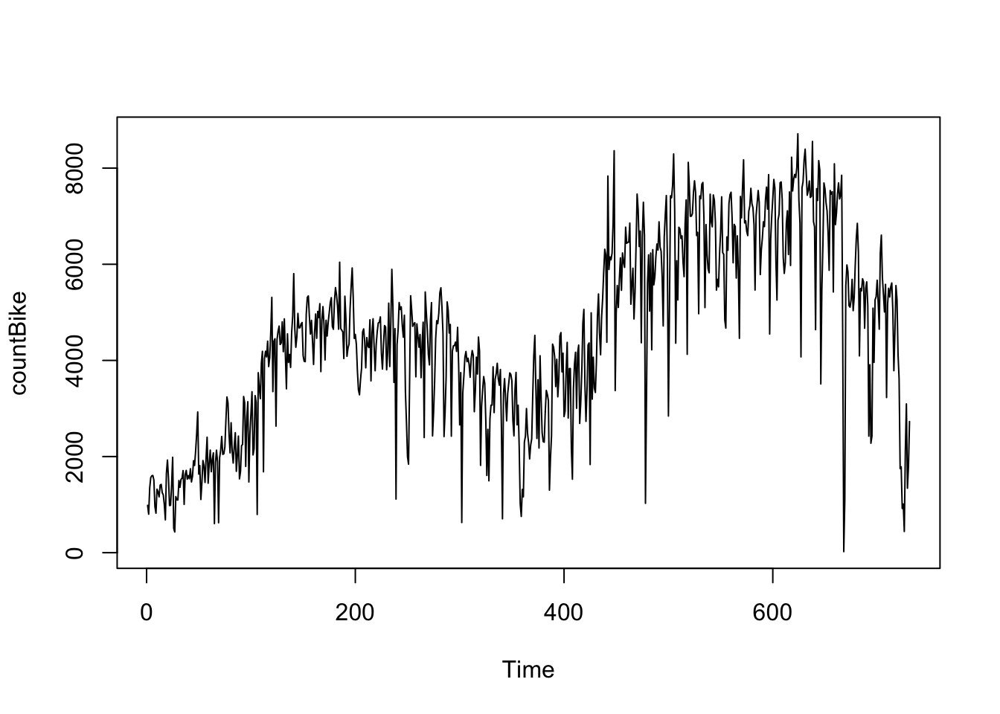
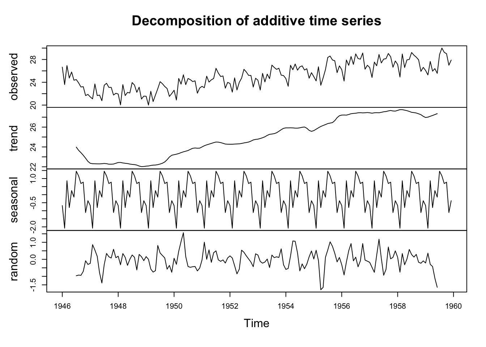
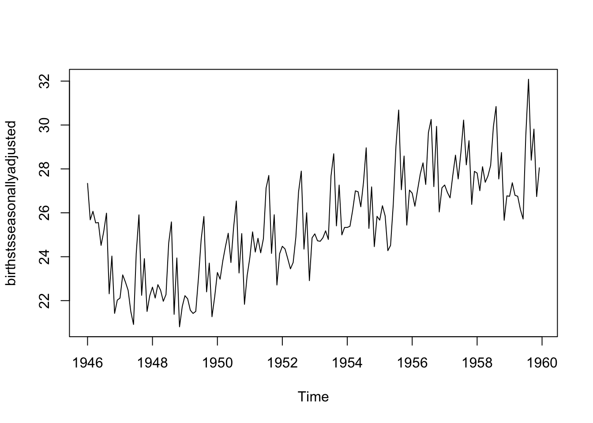

Použijeme dáta o požičiavaní bicyklov. Dátový súbor je dostupný na href=“https://archive.ics.uci.edu/ml/datasets/Bike+Sharing+Dataset”> adrese kde sú vysvetlené aj premenné. Budeme používať dáta o dennom požičiavaní bicyklov. Závislá premenná bude “cnt”, ktorá v sebe zahrňa celkový počet bicyklov požičaných za deň pre obe skupiny ľudí aj registrovaných aj príležitostných.
Údaje môžete načítať do R pomocou funkcie read.csv(), ktorá predpokladá, že vaše údaje sú po sebe idúce časové body v jednoduchom textovom súbore s jedným stĺpcom. Keď načítate údaje časových radov do R, ďalším krokom je uloženie údajov do objektu časových radov v R, aby ste mohli použiť mnohé funkcie R na analýzu údajov časových radov. Na uloženie údajov do objektu časového radu používame funkciu ts() v R. Napríklad na uloženie údajov do premennej ‘bike’ ako objektu časového radu v R napíšeme:
library(tseries)
Registered S3 method overwritten by 'quantmod':
method from
as.zoo.data.frame zoo
Prvá vec, ktorú budete chcieť urobiť pri analýze údajov časových radov, bude načítať ich do R a vykresliť časový rad.
plot.ts(countBike)

Z časového grafu vidíme, že tento časový rad by sa dal pravdepodobne opísať pomocou aditívneho modelu, pretože náhodné výkyvy v údajoch majú v čase zhruba konštantnú veľkosť
Niekedy sa množina údajov časových radov, ktorú máte, mohla zhromažďovať v pravidelných intervaloch kratších ako jeden rok, napríklad mesačne alebo štvrťročne. V tomto prípade môžete pomocou parametra „frekvencia“ vo funkcii ts() určiť, koľkokrát boli údaje za rok zhromaždené. Pre mesačné údaje časových radov nastavíte frekvenciu = 12, zatiaľ čo pre štvrťročné údaje časových radov nastavíte frekvenciu = 4.
Príkladom sezónnych údajov je súbor údajov o počte pôrodov za mesiac v meste New York od januára 1946 do decembra 1959. Tieto údaje sú dostupné v súbore “NewYorkBirths.csv” Údaje môžeme načítať do R a uložiť ich ako objekt časovej rady zadaním:
Z tohto časového radu vidíme, že sa zdá, že v počte pôrodov za mesiac existujú sezónne variácie: každé leto je vrchol a každú zimu je najnižší. Opäť sa zdá, že tento časový rad by sa dal pravdepodobne opísať pomocou aditívneho modelu, pretože sezónne výkyvy sú v priebehu času zhruba konštantné a nezdá sa, že by záviseli od úrovne časového radu a náhodné výkyvy sa tiež zdajú byť v priebehu času zhruba konštantnej veľkosti.
1.1 Dekompozícia časových radov
Rozloženie časového radu znamená jeho rozdelenie na jednotlivé zložky, ktorými sú zvyčajne trendová zložka a nepravidelná zložka, a ak ide o sezónny časový rad, sezónna zložka.
Nesezónny časový rad pozostáva z trendovej zložky a nepravidelnej zložky. Dekompozícia časového radu zahŕňa snahu rozdeliť časový rad na tieto zložky, čiže odhadnúť trendovú zložku a nepravidelnú zložku.
1.1.1 Trend zložka
Na odhadnutie trendovej zložky nesezónneho časového radu, ktorý možno opísať pomocou aditívneho modelu, sa bežne používa metóda vyrovnávania (vyhladzovania), ako je napríklad výpočet jednoduchého kĺzavého priemeru časového radu.
Funkciu SMA() (Simple Moving Average) v balíku „TTR“ (https://bookdown.org/kochiuyu/technical-analysis-with-r-second-edition/technical-indicators.html) R možno použiť na vyhladenie údajov časových radov pomocou jednoduchého kĺzavého priemeru. Ak chcete použiť túto funkciu, musíme najprv nainštalovať balík „TTR“ R (návod na inštaláciu balíka R nájdete v časti Ako nainštalovať balík R ).
Potom môžete použiť funkciu „SMA()“ na vyhladenie údajov časových radov. Ak chcete použiť funkciu SMA(), musíte zadať poradie (rozpätie) jednoduchého kĺzavého priemeru pomocou parametra „n“. Napríklad na výpočet jednoduchého kĺzavého priemeru rádu 5 nastavíme n=5 vo funkcii SMA().
Napríklad, ako je uvedené vyššie, časový rad počtu požičaných bicyklov za deň sa javia ako nesezónne a možno ich pravdepodobne opísať pomocou aditívneho modelu, pretože náhodné výkyvy v údajoch sú zhruba konštantné. Môžeme sa teda pokúsiť odhadnúť trendovú zložku tohto časového radu vyhladením pomocou jednoduchého kĺzavého priemeru. Na vyhladenie časového radu pomocou jednoduchého kĺzavého priemeru rádu 30 (mesiac) a vykreslenie údajov vyhladeného časového radu napíšeme:
Údaje vyhladené jednoduchým kĺzavým priemerom rádu 30 poskytujú jasnejší obraz trendovej zložky a môžeme vidieť, že časové rady počtu požičaných bicyklov za deň stúpal postupne až na hodnoty okolo 7000 a začal kolísať okolo 6000 s náhodnými poklesmi pod 5000.
1.1.2 Sezónna zložka
Sezónny časový rad pozostáva z trendovej zložky, sezónnej zložky a nepravidelnej zložky. Rozloženie časového radu znamená rozdelenie časového radu na tieto tri zložky: teda odhad týchto troch zložiek.
Na odhadnutie trendovej zložky a sezónnej zložky sezónneho časového radu, ktoré možno opísať pomocou aditívneho modelu, môžeme použiť funkciu „decompose()“ v R. Táto funkcia odhaduje trendové, sezónne a nepravidelné zložky časového radu ktoré možno opísať pomocou aditívneho modelu.
Funkcia „decompose()“ vráti ako výsledok objekt zoznamu, kde sú odhady sezónneho komponentu, komponentu trendu a nepravidelného komponentu uložené v pomenovaných prvkoch týchto objektov zoznamu, ktoré sa nazývajú „sezónne“, „trend“ a „náhodné“. “.
Napríklad, ako je uvedené vyššie, časový rad počtu pôrodov za mesiac v meste New York je sezónny s vrcholom každé leto a minimom každú zimu a možno ho pravdepodobne opísať pomocou aditívneho modelu, pretože sezónne a náhodné výkyvy sa zdajú byť mať v priebehu času zhruba konštantnú veľkosť. Na odhad trendových, sezónnych a nepravidelných zložiek tohto časového radu napíšeme:
birthstscomponents <-decompose(birthsts)
Odhadované hodnoty sezónneho, trendového a nepravidelného komponentu sú teraz uložené v premenných komponenty birthstscomponents\(seasonal, birthstscomponents\)trend and birthstscomponents$random. Napríklad odhadované hodnoty sezónnej zložky môžeme vidieť zadaním:
# birthstscomponents$seasonal
Odhadované sezónne faktory (birthstscomponents$seasonal) sú uvedené pre mesiace január až december a sú rovnaké pre každý rok. Najväčší sezónny faktor je za júl (približne 1,46) a najnižší za február (približne -2,08), čo naznačuje, že sa zdá, že každý rok je vrchol pôrodov v júli a najnižší počet narodených vo februári.
Odhadovaný trend, sezónne a nepravidelné zložky časového radu môžeme vykresliť pomocou funkcie „plot()“, napríklad:
plot(birthstscomponents)

Uvedený dekompozičný graf zobrazuje pôvodný časový rad mesačných pôrodov v NY, odhadovanú trendovú zložku (druhá zhora), odhadovanú sezónnu zložku (tretia zhora) a odhadovanú nepravidelnú zložku (dole). Vidíme, že zložka odhadovaného trendu vykazuje malý pokles z približne 24 tisíc v roku 1947 na približne 22 tisíc v roku 1948, po ktorom nasleduje stabilný nárast na približne 27 tisíc v roku 1959.
Ak máte sezónny časový rad, ktorý možno opísať pomocou aditívneho modelu, môžete ho sezónne upraviť odhadom sezónnej zložky a odpočítaním odhadovanej sezónnej zložky od pôvodného časového radu. Môžeme to urobiť pomocou odhadu sezónnej zložky vypočítanej funkciou „decompose()“.
Napríklad, aby sme sezónne upravili časový rad počtu pôrodov za mesiac v New Yorku, môžeme odhadnúť sezónny komponent pomocou „decompose()“ a potom odpočítať sezónny komponent od pôvodného časového radu:
Potom môžeme vykresliť sezónne upravené časové rady pomocou funkcie „plot()“ zadaním:
plot(birthstsseasonallyadjusted)

Môžete vidieť, že sezónna variácia bola odstránená zo sezónne očisteného časového radu. Sezónne očistený časový rad obsahuje už len trendovú zložku a nepravidelnú zložku.